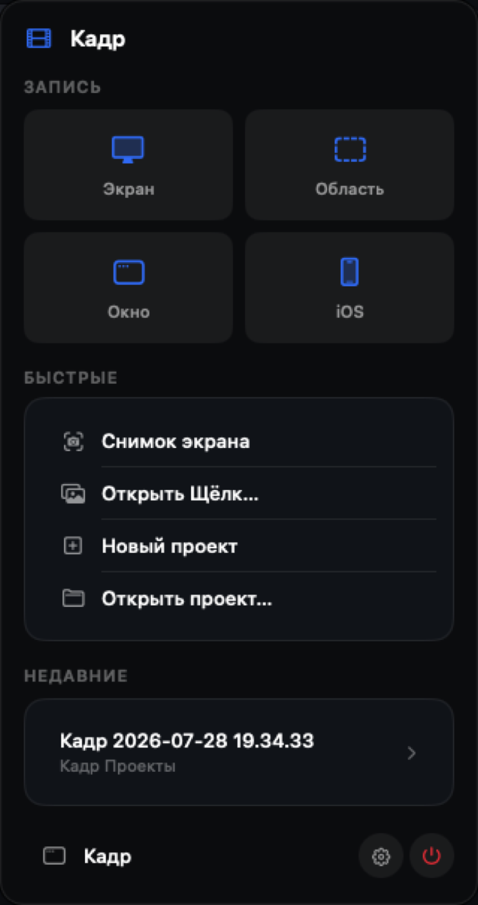

Щёлк.Кадр
Скриншоты и запись экрана — в одном приложении для Mac. Один значок в строке меню, общие настройки, отдельная бета.

Скриншоты и запись экрана — в одном приложении для Mac. Один значок в строке меню, общие настройки, отдельная бета.
Щёлк — для снимков и пометок. Кадр — для записи и сборки ролика. Без прыжков между программами.
Куда сохранять, в каком формате и что делать после снимка — настраивается один раз и не мешает работе.

Сайт или переписка не влезают на экран — снимите длинный кадр одним проходом.

Экран, область, окно или телефон — старт записи из той же панели, что и снимки.

Из строки меню открываются и снимки, и запись — всё в Щёлк.Кадр.
Одно окно: общие параметры, Щёлк, Кадр, клавиши и версия.
Проверка новых версий прямо из приложения. Можно скачать и с сайта.

Сейчас доступна бета. Стабильная версия появится позже.